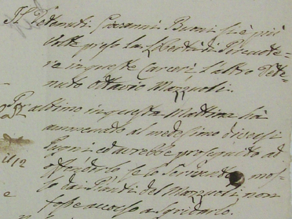

|
- PROCESSI E FATTI CURIOSI CHE RIGUARDANO I FANTINI -
|
|
Giovanni del fù Pietro Boni in età di anni 19 scapolo di mestiere mugnaio e cavalcante, nativo del popolo di S.Reina
fuori di Porta Pispini di questa città e da otto anni circa dimorante in Siena in via Lombardia perchè, sebbene
conoscesse la sfrenatezza del cavallo baio di pertinanza di Giovanni Tassinari Oste alla Lupa, si facesse lecito in occasione di averlo fuori della porta Tufi cavalcato
nella sera del dì 21 luglio prossimo passato, all'oggetto di esercitarlo alla corsa, di eccitare
e colli sproni e colla briglia il detto cavallo in prossimità della suddetta porta, facendogli così
prendere la corsa di tutta carriera nell'atto d'introdursi in città col pericolo di farsi togliere la mano, conforme questo
cavallo gli tolse e di essere così di danno altrui, ed infatti avendo preso per S.Pietro alla Scale, alla piazza del Duomo,
e di lì lungo la strada di S.Giovanni allorchè fù dirimpetto alla Casa Bindi Seggardi investì col medesimo cavallo
Paolo Salvini nell'atto che si voltava indietro per il rumore derivante dalla foga di questa bestia e da quest'urto
avendolo sbalzato nella muraglia di detta casa, ne riportò una grave ripercussione nella testa con sfondamento dell'ossa
del cranio, per il che cadde in terra privo di sensi ed in questo stato passò all'altra vita circa all'unora della mattina del dì 21 luglio 1821.
Il cavallo era lo stesso con il quale Bonino si cimentò "il 29 giugno in occasione delle prove della Piazza
del Campo" quando il cavallo sfuggì di nuovo al controllo del fantino, urtando, questa volta senza gravi conseguenze, Simone Ferrini e Alberto Michi
Bonino venne riconosciuto colpevole di omicidio colposo e pertanto condannato a tre mesi di carcere, al pagamento delle spese processuali e ad un indennizzo
agli eredi dell'ucciso per un totale di £ 89. A seguito di questa condanna, Bonino non potè prendere parte al palio di agosto, che aveva vinto l'anno precedente con
il giubbetto dell'Oca. Da altri incartamenti, sappiamo che durante il periodo della reclusione, venne condannato a tre giorni di carcere segrete per essersi preso più volte la libertà di percuotere un altro dentenuto che rispondeva al nome di Ottavio Mazzuoli.  Archivio di Stato di Siena - Governo di Siena 761, n.37 |